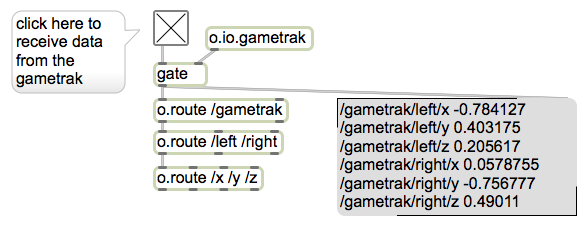
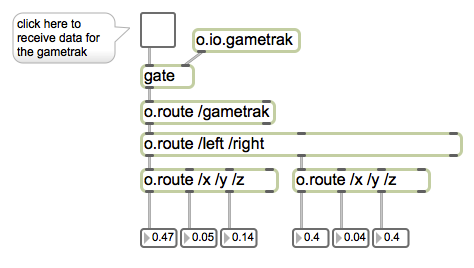
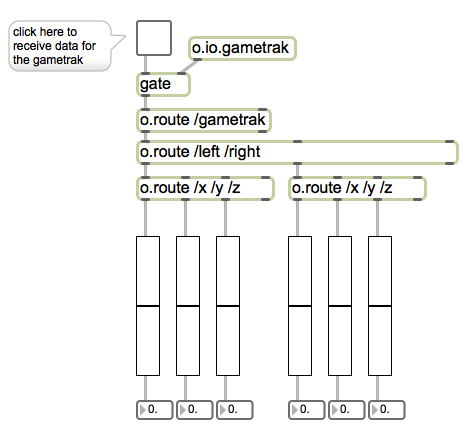
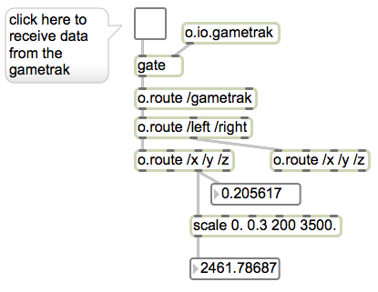
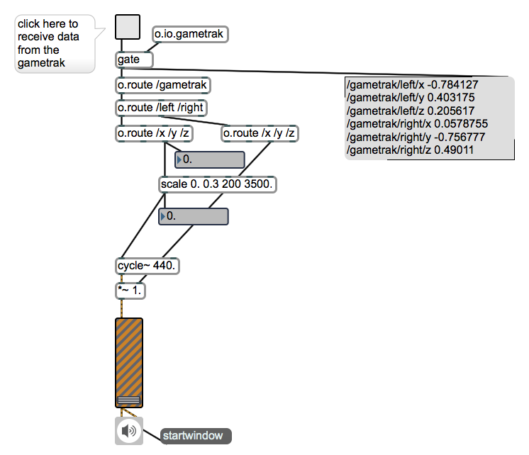

CNMAT Max/MSP Summer Workshop 2012
Lab Assignment 1
August 24, 2012
Summary
In this lesson, we will use data from the Gametrak to control the pitch and volume of a virtual Theremin.
We will begin by visualizing the data coming from the Gametrak to figure out what it is and what we will
need to do to it to make it suitable to control our instrument.
Topics
Data visualization (printing, number boxes, multislider), scaling.
Objects Introduced
[button ], [toggle ], [flonum ], [number ], [message ], [comment ], [print ], [o.message ], [gate ], [plus ]
(+), [minus ] (-), [times~ ] [times ] (*), [div ] (/), [scale ], [gain~ ] , [multislider ]
Relevant Tutorials
Basic
-
1.
- Hello
-
2.
- Numbers and Lists
-
3.
- Simple Math
-
4.
- Controlling Data Flow
Data
-
1.
- Data Scaling
MSP Topic
-
1.
- How Digital Audio Works
1 Visualization
-
1.
- Start by turning on the gametrack input at the top of the patch. Notice that nothing happens
;) This is often the case when working with Max—we have some operation that is happening,
but we can’t see what it is or what it is doing.
We can assume that the object called [o.io.gametrak ] is sending out data that is being
processed by the four [o.route ] objects below it. The first thing we should do is verify that
[o.io.gametrak ] is indeed sending out data, and see what kind of data it is.
-
2.
- Hook up the right inlet of an [o.message ] object to the outlet of the [gate ] object and look
at the data. (If the Max window is not visible on your monitor, bring it forward by choosing
“Max Window” under the “Window” menu.)

Take a close look at the messages in the [o.message ] box (turn off the Gametrak input if the
messages are being printed too fast). Notice that the messages coming from [o.io.gametrak ]
are in the form /gametrak/left/x <number> , or /gametrak/right/z <number> . What do you think the
[o.route ] objects are doing in the patch?
-
3.
- Display the values coming in from the Gametrak by connecting the three leftmost outlets of the
two [o.route /x /y /z] objects to number boxes. You have a choice between two number boxes:
one that displays floating point (decimal) numbers, and one that displays integers. Based on
what you’ve seen printed to the [o.message ] box, which one do you think is appropriate here
and what happens if you use the wrong one?

As you move the two joysticks, you should see the numbers change rapidly. While useful for
verifying that data is actually flowing through the patch, the numbers are changing so fast
that it can be difficult to track them.
-
4.
- Try visualizing the numbers in the number boxes using the [multislider ] object. (HINT:
[multislider ] has a couple of different modes that are useful for displaying data. In particular,
it has a mode called “pointscroll”–check out the help file.)

2 Sonification
-
1.
- Start by turning on the audio system by clicking on the speaker icon ( [ezdac~ ] ) at the bottom
of the patch. Slowly turn up the volume by dragging the slider [gain~ ] above the speaker.
You should hear a sine wave tuned to 440. Hz, or A above middle C.
We want to control the frequency (pitch) and amplitude (volume) of that sine wave using the
joysticks of the Gametrak.
-
2.
- Pull the left joystick straight up away from the Gametrak—pull it as far as you can without
standing and without winding the cord around anything. Now take note of the /z parameter of
the left [o.route ] object—this will be the maximum value of our range (probably somewhere
around 0.3).
-
3.
- Now let’s scale the range of the /z parameter you just recorded to a reasonable range of audible
frequencies like 200–3500 Hz. We will do this by using the [scale ] object which takes four
arguments: (1) minimum input value (2) maximum input value (3) minimum output value
(4) maximum output value.
So, if we want to scale input values that have a range from 0–.3 to 200–3500, we should create a
scale object with the arguments [scale 0.0 0.3 200. 3500.] (remember to use floating-point
arguments).
Verify that the scaling is working properly by using a number box attached to the output of the
[scale ] object.

-
4.
- Once you have verified that the scaling is working properly, connect the outlet of the [scale ] object
to the inlet of the [cycle\protect \unhbox \voidb@x \penalty \@M \relax \unhbox \voidb@x \special {t4ht@+&{35}x00A0{59}}x{}~ ] object.
-
5.
- Now let’s control the volume with the Gametrak. Connect the /z parameter of the right joystick to
the right inlet of the [*~ ] ( [times~ ] ) object after the [cycle\protect \unhbox \voidb@x \penalty \@M \relax \unhbox \voidb@x \special {t4ht@+&{35}x00A0{59}}x{}~ ] object and before the [gain~ ]
object.
